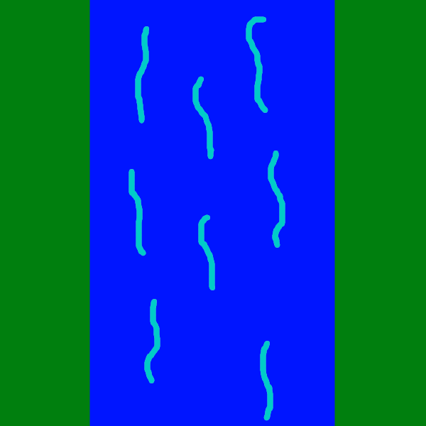

How to Play
Place Towers by clicking on a space, and selecting the tower you wish to place. The stats of a tower are
on the right hand side of the screen.
There are two types of Towers: Defense and Production.
Defense Towers use Energy to connect their
signal to the incoming vehicles.
Production Towers create Energy at a constant rate.
Some production towers can only be placed on certain terrain. For example, an oil rig can only be placed on an oil spot.
Likewise, Hydro power can only be produced on a water terrain.
If the required Energy input of a tower exceeds the total energy stored, it will not be able to operate.
To keep Energy above 0, Production Towers need to be built. This will increase Energy Rate. As long as a level is in play, Energy will increase at a constant rate of Energy Rate.
A disconnected Vehicle can be identified by the empty red signal bars.
Once a vehicle is connected, the bars will become solid green.
Once a vehicle reaches the end of the road, it will either reward the player with money if the vehicle is connected,
or reduce the city's Connectivity if the vehicle is disconnected.
The levels progressively get harder as they increase, up until level 25, when the game is over. After level 25, the player can keep playing until losing, but vehicles will spawn in random orders and amounts.
BACK TO MENUGame By: Matyas Fenyves, Jeremy De La Cruz, Qixin Chen, Jose Romano